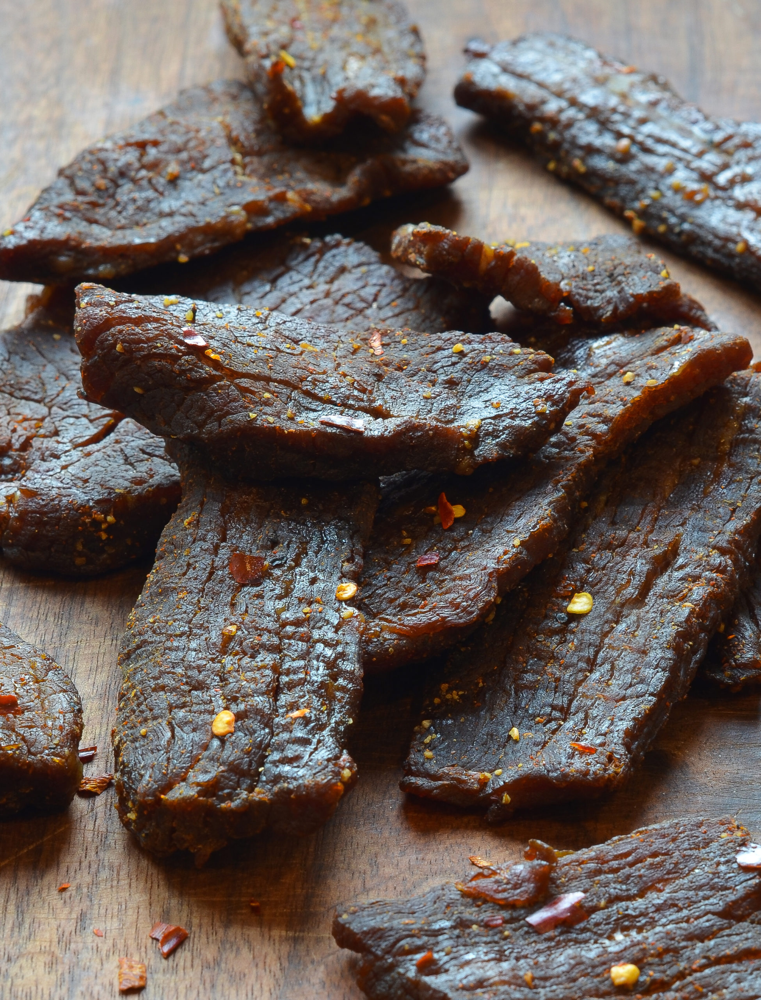

HOMEMADE BEEF JERKY

When you're lost in the woods, there's hardly a better snack to keep on hand than some homemade beef jerky. You might attract some bears who pick up the scent, but no one is gonna leave the forest hungry!
It is important to make sure you're starting with a well trimmed, lean cut of meat, since fat does not dry out and accelerate your jerky snack spoiling. Try using an eye of round roast. Before slicing, try placing it in the freezer for a couple of hours, rendering it easier to cut.
Ingredients
- One 3-pound eye of round roast, trimmed of fat and silver skin
- 1 cup (packed) dark brown sugar
- 1 cup soy sauce
- 3 tablespoons Worcestershire sauce
- 1 tablespoon smoked paprika
- 1 teaspoon freshly ground black pepper
- 1 teaspoon red pepper flakes
- 1 teaspoon onion powder
- 1/2 teaspoon garlic powder
Steps
- Slice the meat between ⅛ and ¼ inch thick with the grain. (If the roast is too thick to slice easily, cut it in half horizontally before slicing.)
- Make the marinade: In a medium bowl, combine the brown sugar, soy sauce, Worcestershire sauce, smoked paprika, meat tenderizer, black pepper, red pepper flakes, onion powder, and garlic powder. Whisk until evenly combined and the sugar is dissolved.
- Add the meat to the marinade and toss until all of the pieces are evenly coated. Cover with plastic wrap or transfer to a large ziplock bag and marinate in the refrigerator for at least 12 hours or overnight. Toss the meat (or flip the bag) once or twice to be sure the meat marinates evenly.
- Line two baking sheets with aluminum foil for easy clean-up. Place a wire rack over each pan. Preheat the oven to 175°F and set two oven racks in the centermost positions.
- Arrange the marinated meat on the wire racks in a single layer. Bake, rotating the pans from front to back and top to bottom midway through, until the meat is dried out, 3 to 4 hours. To determine if the jerky is thoroughly dried out, take a piece out of the oven and let it cool to room temperature. It should be dry to the touch, leather-like in appearance, and chewy but still somewhat tender.
- Store the jerky inside an airtight plastic container, Ziploc bag, or airtight glass jars. Properly dried jerky will keep at room temperature for about one week. Refrigerate or freeze for longer storage.
Return Home